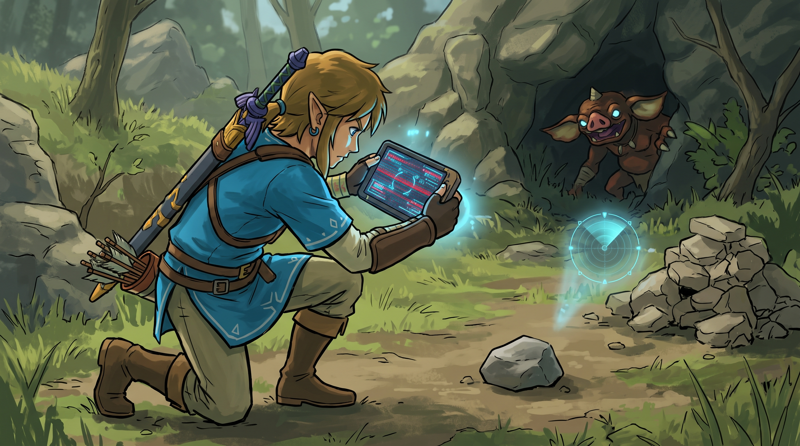
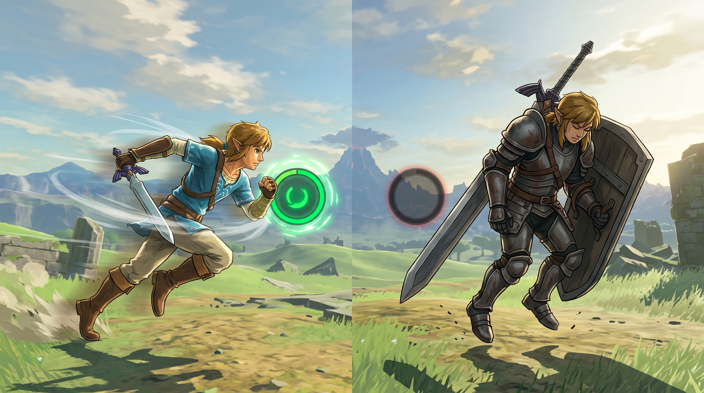

Consideraciones Avanzadas
La magia tiene un precio
Búsqueda Híbrida, Reranking y CRAG mejoran drásticamente la calidad de un sistema RAG, pero ninguna mejora es gratuita. Cada técnica añade latencia, coste de infraestructura o complejidad de mantenimiento. Antes de implementar cualquiera de ellas, hay que entender exactamente qué se gana y qué se sacrifica.
Antes de que la Búsqueda Híbrida pueda actuar, los documentos originales (PDFs, manuales, bases de datos) deben ser cortados en pedazos más pequeños llamados chunks (fragmentos). Este proceso parece trivial pero es crítico: si cortas los párrafos por la mitad rompiendo las frases, o si la base de datos está llena de documentos desactualizados, de nada servirá tener el mejor algoritmo.
Cortar a tamaño fijo sin respetar la estructura del texto rompe el significado. Una frase a mitad de párrafo pierde su contexto y se vuelve inútil o engañosa para el sistema de recuperación.
Una base de datos con documentos del año pasado puede responder con información obsoleta con total confianza. El sistema no sabe que los datos están vencidos; los recupera y los usa como si fueran correctos.
Chunking semántico respetando párrafos, con overlap controlado entre chunks, y mantenimiento regular de la base de datos con versiones y fechas de vigencia de cada documento.

Link usa la Cámara Sheikah para registrar monstruos en su Enciclopedia. Si Link le toma una foto borrosa a una piedra pensando que es un monstruo (mal chunking / malos datos), el sensor de la tableta no servirá de nada. Por más avanzado que sea el radar, te guiará hacia una piedra inútil porque la información base estaba mal desde el principio. Garbage In, Garbage Out es la primera ley del desarrollo de sistemas de IA.
En el desarrollo de software, la velocidad importa. La experiencia del usuario se degrada notablemente cuando las respuestas tardan más de 3-5 segundos. Un RAG tradicional responde casi instantáneamente. Sin embargo, en un pipeline avanzado cada capa de optimización añade latencia:
Suma milisegundos al hacer dos búsquedas en paralelo (vectorial + BM25) y luego combinar los resultados con RRF. El impacto es mínimo pero medible en sistemas de alta escala.
Requiere pasar los textos por un modelo neuronal pesado (Cross-encoder), lo que puede tardar un par de segundos. Es el principal cuello de botella del pipeline antes de CRAG.
Si decide que la información es incorrecta, tiene que detenerse, conectarse a una API externa (Google Search / Tavily), descargar los resultados y volver a leer. Es el más lento del pipeline.

Link puede viajar ligero con una espada corta y atacar rapidísimo (RAG tradicional). Pero si decide equiparse con la armadura de hierro más pesada, un escudo gigante y un mandoble a dos manos (Pipeline Híbrido + Rerank + CRAG), estará protegido contra casi cualquier daño (cero errores), pero sus movimientos serán lentísimos y consumirán toda su barra de resistencia. La armadura completa es correcta para el boss final, no para explorar el mapa abierto.
Evaluar si un documento es correcto (CRAG) a menudo implica hacer que un LLM (como GPT-4 o Claude) actúe como juez antes de generar la respuesta final. Esto significa que estás pagando el doble de tokens (dinero) por cada pregunta del usuario: una llamada para el juicio y otra para la respuesta. Además, mantener bases de datos vectoriales y modelos de Reranking encendidos requiere servidores con GPUs costosas.
Para controlar el gasto sin sacrificar calidad donde importa:
Las Flechas Ancestrales son el arma más poderosa del juego; desintegran al enemigo al instante. Pero cuestan materiales rarísimos y muchísimas rupias. Usar el pipeline completo de RAG para una pregunta trivial es como gastar una Flecha Ancestral de 500 rupias para matar a un Bokoblin rojo de nivel 1. Funciona, sí, pero acabará con el presupuesto del reino rápidamente. Hay que saber cuándo usar las herramientas caras y cuándo basta con una flecha normal.
Las tres técnicas forman un pipeline que maximiza la calidad de las respuestas, pero cada organización debe evaluar qué nivel de complejidad justifica su caso de uso específico. No hay una respuesta única correcta.